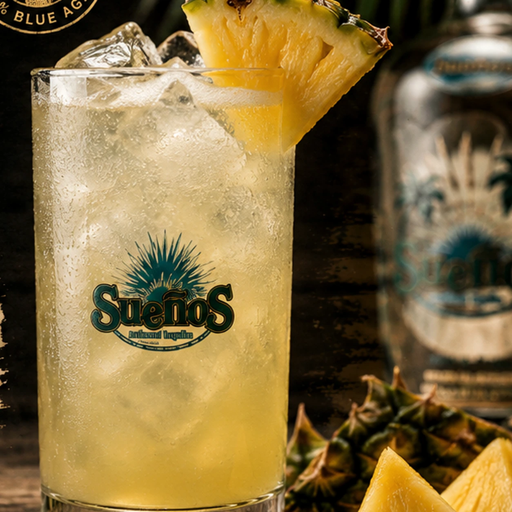

Ingredientes
- 45 mL (1½ oz) de Tequila Sueños Blanco
- 60 mL (2 oz) de jugo de piña
- 90 mL (3 oz) de agua mineral con gas fría
- Hielo
- Gajo de piña para decorar
Tequila, piña y soda. Así de simple.
Un highball ligero y tropical con Sueños Blanco, jugo de piña y agua mineral con gas bien fría. Fácil para cualquier tarde y lo bastante brillante para tener nombre propio.


Confirma que tienes la edad legal para consumir alcohol en tu ubicación.